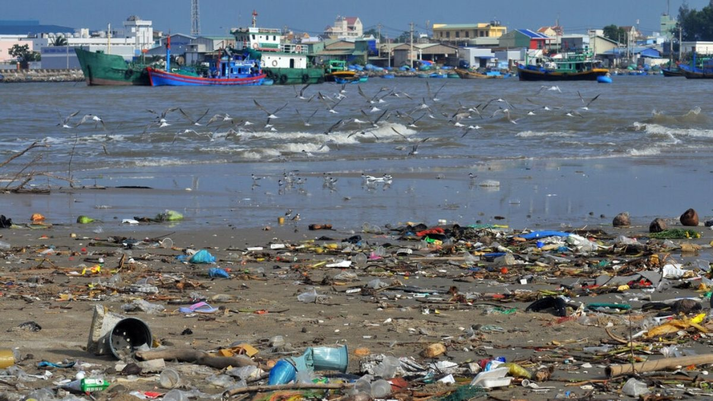
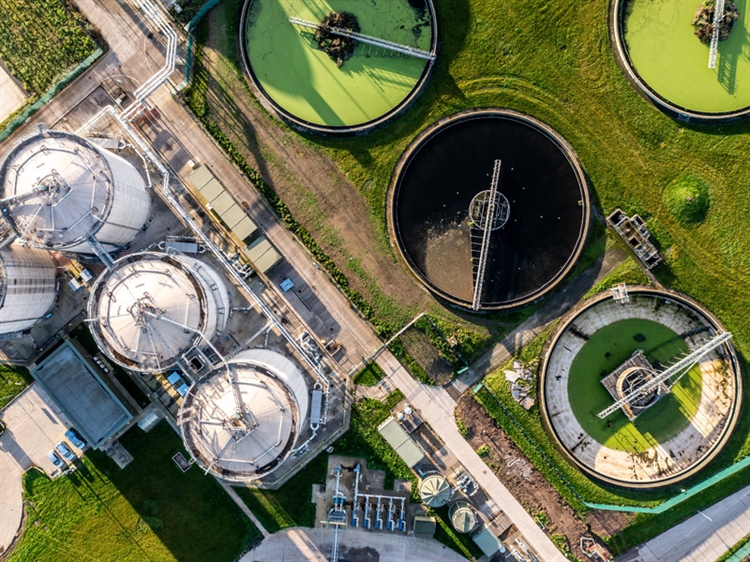
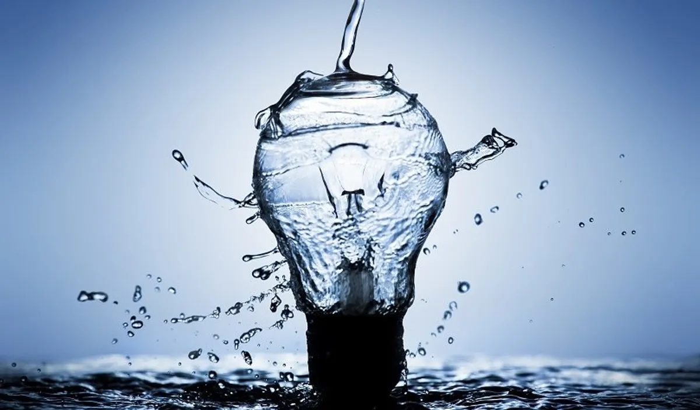

Introduction
Water is the foundation of life, yet millions of people worldwide still lack access to clean water and proper sanitation. This website serves as a platform to educate, raise awareness, and encourage action toward achieving sustainable water management and sanitation solutions. Through informative content, interactive features, and real-world data, we aim to highlight the importance of clean water access and inspire positive change.
Our structured navigation menu allows users to explore key sections, such as Volunteer, Table, User Profile, and more. To improve engagement, clear call-to-action buttons are placed throughout the site, making it easier to get involved.
Additionally, we’ve integrated interactive elements, including **dynamic circular diagrams** that visually represent different student-driven initiatives. These diagrams contain clickable areas that lead to key sections, such as the Page Editor, Content, and Validation pages.
To enhance user experience, we’ve implemented a **JavaScript-powered "Join Us" button** that displays an engaging alert message upon clicking. **Subtle hover effects and animations** have also been added to the navigation bar, ensuring a smooth and visually appealing browsing experience.
Clean Water & Sanitation
Clean water and proper sanitation are essential for human survival and overall well-being. However, over 2 billion people still lack access to safe drinking water, while inadequate sanitation leads to the spread of deadly diseases. Sustainable water management is crucial in ensuring that future generations have access to this vital resource.
Our initiative promotes solutions such as **water conservation, efficient filtration systems, and community-driven projects** to improve sanitation infrastructure. By working together, we can address the global water crisis and ensure safe, accessible water for all.

Water Pollution
Water pollution is one of the biggest threats to clean water availability. Industrial waste, agricultural runoff, plastic pollution, and improper sewage disposal contaminate water sources, making them unsafe for consumption and harming aquatic ecosystems.
The main sources of water pollution include:
- Industrial waste: Toxic chemicals released into rivers and lakes cause severe contamination.
- Plastic pollution: Millions of tons of plastic waste end up in oceans and water bodies annually.
- Agricultural runoff: Pesticides and fertilizers seep into water sources, causing algae blooms and harming wildlife.
- Poor wastewater management: Untreated sewage and wastewater increase the spread of diseases like cholera.
Addressing these issues requires strong policies, corporate responsibility, and community action to reduce pollution.
Solutions
The fight for clean water involves a combination of technology, policy, and public awareness. Some of the most effective solutions to improving global water quality include:
- Innovative Filtration Systems: Advanced water purification technologies help remove harmful contaminants and ensure safe drinking water.
- Waste Management Programs: Reducing plastic waste and promoting proper disposal methods prevent pollution in water sources.
- Eco-Friendly Farming Practices: Limiting the use of harmful fertilizers and pesticides prevents toxic runoff into rivers and lakes.
- Government Regulations: Enforcing stricter laws on industrial waste disposal helps minimize pollution.
- Community Initiatives: Local programs focusing on water conservation and education empower people to take action.
Combining these strategies can significantly reduce pollution and improve access to clean water worldwide.
Future Goals
Looking ahead, we strive to ensure sustainable water usage and sanitation improvements through several key initiatives:
- Education: Raising awareness about water conservation and pollution prevention.
- Community Projects: Implementing local initiatives to provide clean water access in underprivileged areas.
- Policy Advocacy: Encouraging governments and industries to adopt environmentally friendly water management practices.
- Technological Advancements: Supporting research and innovation in water filtration and purification methods.
By focusing on these areas, we can take meaningful steps toward a world where clean water is accessible to everyone.
